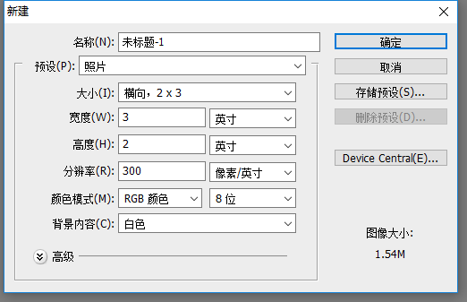
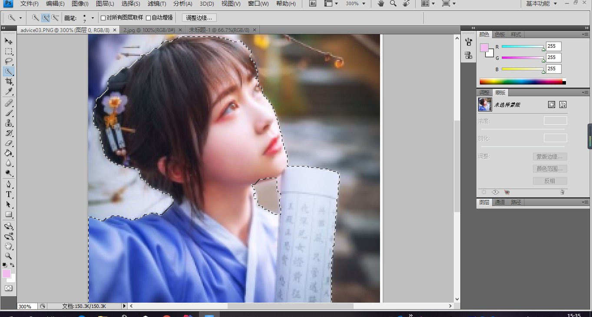

切图，我的理解是跟截图和抠图有点相似
一、截图很简单，抠图比截图难一点；抠图可以用到工具栏的套索工具
(需要说明一下，我用的是photoshop cs4,因为是很久前就开始使用了)
2、然后新建一个文件，选择照片

3、我呢用快速选择工具，即第四个，看右边的图
4、将人像套索出来,如下图

然后选择工具栏的第一个工具，箭头，将选择好的人像移动到新建的哪个文件上，重复操作，将你的图片放好位置，
你要注意到，ps的右侧有个图层，你每次放入一个人像，都会自动帮你增加了一层图层
5、抠出来的图放在刚刚新建的照片上好了后,我在上面画了粉红色，有爱的画面，哈哈
简单抠图完成